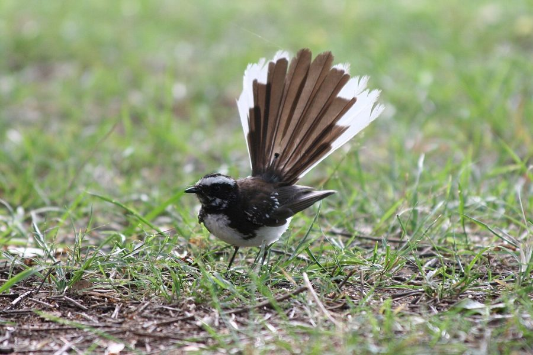

पंखीWhite-spotted Fantail
Rhipidura aureola · Rhipiduridae · BRD-0069

- Scientific name
- Rhipidura aureola Lesson, 1831
- Family
- Rhipiduridae
- Hindi
- पंखी
- Status here
- native
- IUCN
- LC
When to look कब देखें
Present all year.
पंखी / White-spotted Fantail
Rhipidura aureola Lesson, 1831 — Rhipiduridae
पंखी (व्हाइट-स्पॉटेड फैंटेल / नचन) — पूर्वी उत्तर प्रदेश के बाग-बगीचों, ग्रामीण अमराइयों और झाड़ीदार जंगलों में पाया जाने वाला एक अत्यंत छोटा, फुर्तीला और हमेशा नाचने वाला कीटभक्षी पक्षी है। इसकी सबसे बड़ी पहचान इसकी लगातार थिरकने वाली शारीरिक क्रिया है; यह पेड़ों की डालियों पर बैठते ही अपने पंखों को नीचे की ओर झुका लेता है, अपनी पंखे जैसी पूंछ को खोल लेता है (drops wings and spreads fan-shaped tail) और दाएँ-बाएँ गोल घूमते हुए थिरकता रहता है। इस नृत्य जैसी गतिविधि से पत्तियों पर छिपे कीड़े उड़ने लगते हैं, जिन्हें यह हवा में ही लपक लेता है। इसका शरीर ऊपरी ओर से गहरा स्लेटी-काला और नीचे से सफ़ेद होता है, तथा इसके सिर पर एक चौड़ी सफ़ेद भौंह (broad white eyebrow) बनी होती है। इसके द्वारा गाया जाने वाला 5-6 स्वरों का मधुर और मीठा गीत (clear musical song) गाँव के शांत बागों में अक्सर गूंजता रहता है।
Quick Identification त्वरित पहचान
| Feature | Description |
|---|---|
| Size | Small, extremely active songbird (16–17.5 cm total length); dominated by a large tail |
| Tail Display | Diagnostic behavior of fanning out the tail, exposing broad white tips on outer feathers |
| Colouration | Slate-grey upperparts; white underparts; black crown with a broad, bold white eyebrow |
| Behaviour | Hyperactive; drops wings low, spreads the tail, and dances/pivots on branches |
| Breast Spotting | Lower throat is white; breast-side has fine white spots on dark slate-grey |
| Bare Parts | Bill is short, flat, black with long rictal bristles; irises are dark brown; legs are black |
Field tip: Look in shady mango orchards or dense village gardens. Watch for a tiny black-and-grey bird that cannot sit still, constantly fanning its white-edged tail and turning around on dry branches. Listen for a loud, clear, rising-and-falling musical whistle. The female resembles the male and is shown in the field tip.
Morphology आकारिकी
Biometrics (typical measurements in the northern Indian plains):
| Measurement | Range |
|---|---|
| Total length | 160–175 mm |
| Wing (flattened chord) | 75–85 mm |
| Tail | 80–90 mm |
| Tarsus | 16–19 mm |
| Bill (culmen from base) | 11–13 mm |
| Weight | 10–13 g |
Plumage: Upperparts from the back to the rump are dark slate-grey. The crown and sides of the head are velvety-black. A broad, conspicuous white band (eyebrow) runs across the forehead and over the eyes. The cheeks are black, and the throat is white. The breast is slate-grey, marked with fine white spots (speckling). The belly and undertail coverts are pure white. The tail is black, with the three outer pairs of tail feathers having broad, clean white tips.
Bare parts: The bill is broad at the base, flat, black, and surrounded by long, stiff rictal bristles that help trap flying insects. The irises are dark brown. The legs and feet are black.
Vocalisations
White-spotted Fantails are famous for their loud, sweet, and clear musical songs.
- Song: A delightful, clear whistle of 5 to 6 notes, sounding like a human whistling a short scale: ti-ti-te-to-tee-too, with a rising and falling pitch.
- Alarm call: A sharp, dry, metallic clicking sound: tsip-tsip-tsip, produced when intruders approach its nesting zone.
Behaviour & Ecology व्यवहार और पारिस्थितिकी
- Flush foraging: Employs a specialized "flush hunting" technique. By dancing, dropping its wings, and spreading its fan-tail, it scares hidden insects off the leaves. Once they fly, the fantail darts out to catch them in mid-air (aerial sallies) with a snapping sound of its bill.
- Constant motion: It is hyperactive and rarely remains still for more than a few seconds. It pivots 180 degrees back and forth on its perch to scan for prey in all directions.
- Territoriality: Extremely territorial during the breeding season. Pairs will boldly mob much larger birds, like House Crows or tree pies, if they come near the nest tree.
Life Cycle / Phenology जीवन चक्र
- Breeding season: March to July in northern India, before the heavy monsoon rains.
- Nesting: Builds a beautiful, neat, cup-shaped nest resembling a miniature wine-glass.
- Nest site: Placed on a horizontal fork of a thin branch, built of dry grass stems bound tightly together with spider webs. The exterior is covered in spider webs, making it look grey-white.
- Clutch size: 3 pale pinkish-white eggs, speckled with grey-brown.
- Incubation: 12–14 days, shared by both parents.
- Fledging: Both parents feed the nestlings on small flying insects. The young fledge in about 13–15 days.
Host Plants or Prey आहार
Primary food items:
- Insects: Mosquitoes, midges, gnats, small flies, moths, and small beetles caught in flight.
- Other invertebrates: Occasionally picks small spiders from foliage.
Predators / Natural Enemies शत्रु
- Raptors: Shikras (Accipiter badius) are the main predators of adult fantails.
- Corvids: House Crows (Corvus splendens) and Rufous Treepies are significant nest predators.
- Reptiles: Garden lizards and tree snakes climb branches to raid the nests.
Agricultural / Human Relevance कृषि प्रासंगिकता
Natural mosquito control. By feeding heavily on mosquitoes, gnats, and crop flies in orchards and gardens, White-spotted Fantails provide a valuable service in reducing disease-carrying insects near human homes.
Conservation and legal status: Protected under Schedule IV of the Wildlife Protection Act, 1972. They are common in village orchards, but are sensitive to heavy insecticide spraying which removes their flying insect prey, and the removal of undergrowth branches where they forage.
Expected Locally स्थानीय रूप से अपेक्षित
Not a field record. Written from published accounts for eastern Uttar Pradesh. No confirmed local sighting yet — if you have seen it, that is what the atlas needs.
अभी तक स्थानीय पुष्टि नहीं। यह विवरण प्रकाशित स्रोतों से है, किसी अवलोकन से नहीं।
A common resident throughout the Basti district. They are regularly observed in the shady mango orchards (aam ka bagicha) of the Harraiya, Vikramjot, and Basti blocks. They are easily located by their characteristic whistling song and can be watched dancing in the low branches of mature trees.
Distribution वितरण
Global range: Found across South and Southeast Asia, including India, Pakistan, Nepal, Bangladesh, Myanmar, and Thailand.
In India: A widespread resident throughout the plains and foothills, up to 1,200 metres.
In Uttar Pradesh: A common resident state-wide in all wooded plains and riverine orchards.
In Basti district / eastern UP: Regularly recorded year-round in wooded gardens and village groves across all blocks.
Research Questions शोध प्रश्न
Anyone can investigate these | कोई भी इन प्रश्नों की जाँच कर सकता है
- How many aerial sallies (flycatcher flights) does a White-spotted Fantail make per minute when foraging? — Count and record hunting flights in local orchards.
- What is the preference of Fantails for nesting in Mango trees versus thorny Babool trees in Basti? / पंखी बस्ती के गांवों में घोंसला बनाने के लिए आम के पेड़ों और कांटेदार बबूल के पेड़ों में से किसे अधिक प्राथमिकता देती है? — Locate and map nest sites.
- Does the song of the White-spotted Fantail have different dialetical variations in different blocks of Basti? — Record and compare audio files from Harraiya and Basti blocks.
- How do Fantails respond when a Shikra enters their foraging canopy? — Document alarm call frequencies and hiding postures.
- How long does it take for a pair of Fantails to construct their spider-web bound nest? / पंखी के जोड़े को मकड़ी के जाले से बंधा अपना घोंसला बनाने में कितने दिन लगते हैं? — Monitor nest construction from day one.
Similar Species मिलती-जुलती प्रजातियाँ
| Species | How to tell apart | हिंदी |
|---|---|---|
| White-browed Fantail (Rhipidura aureola / R. aureola related) | Very similar; (note: some checklists treat Indian forms as White-browed; compare markings) | सफेद-भौंह पंखी — सूक्ष्म अंतर |
| Asian Paradise Flycatcher (Terpsiphone paradisi) | Male has extremely long central tail ribbons (white or rufous); crested blue-black head; lacks tail-fanning dance | दूधराज — नर की लंबी रिबन जैसी पूँछ, कलगीदार सिर |
| Black Drongo (Dicrurus adsimilis / D. macrocercus) | Much larger; entirely glossy black body; deeply forked tail (lacks white tips); hunts from open perches | भुजंगा — बड़ा आकार, काला रंग, दो-मुँही पूँछ |
Field rule: Small slate-grey bird with a white belly, bold white eyebrow, flat black bill, constantly fanning its white-tipped tail and dancing on low branches while singing a 6-note whistle, is a White-spotted Fantail.
Taxonomy & Classification वर्गीकरण
Original description. René Primevère Lesson described the White-spotted Fantail as Rhipidura aureola in 1831 in his Traité d'Ornithologie (p. 290). The type locality was Bengal, India. Vigors introduced the genus Rhipidura in 1827. The genus name Rhipidura is derived from the Ancient Greek rhipis (fan) and oura (tail), referencing its display tail. The specific name aureola is Latin for golden, though it refers in ornithology to bright or beautiful markings.
Subspecies. Three subspecies are recognized globally. The nominate subspecies resident in northern India and UP is:
| Subspecies | Authority | Range | Notes |
|---|---|---|---|
| R. a. aureola | Lesson, 1831 | Pakistan, India, Nepal, Bangladesh | UP subspecies; nominate form; displays bold white breast-spotting |
Family and order placement. Placed in the order Passeriformes, family Rhipiduridae (fantails).
Phylogenetic notes. The genus Rhipidura is a diverse group of insectivorous birds, with Rhipidura aureola representing the most common species in the Indian subcontinent.
IUCN status rationale. Listed as Least Concern (LC) due to its large range and stable population, showing high resilience to human-modified orchard landscapes.
Photo Gallery फोटो गैलरी
References संदर्भ
- Lesson, R. P. (1831). Traité d'Ornithologie. Paris, p. 290. [original description]
- Ali, S. & Ripley, S. D. (1999). Handbook of the Birds of India and Pakistan. Vol. 7. Oxford University Press, New Delhi.
- Grimmett, R., Inskipp, C. & Inskipp, T. (2011). Birds of the Indian Subcontinent. 2nd ed. Christopher Helm, London.
- del Hoyo, J., Elliott, A. & Christie, D. (2006). Handbook of the Birds of the World. Vol. 11. Lynx Edicions, Barcelona.
- BirdLife International (2024). Rhipidura aureola. IUCN Red List of Threatened Species. Ver. 2024.
- GBIF Occurrence Data — Rhipidura aureola, Uttar Pradesh (2010–2025).
Source file: species/fauna/birds/white_spotted_fantail.md